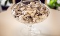

Menu
12 oz.
34 oz.
Macarons 25 56
Faina de migdale, ciocolata, arome naturale, coloranti alimentari
Langues des chats
Aluat cu unt, frisca, arome naturale
Four stafide
Aluat cu unt, stafide, arome naturale
Pricomigdale
Albus de ou, nuci, migdale, faina
Bezele
Albus de ou, zahar, coloranti alimentari
Fursecuri cu ciocolata 
Aluat cu unt, cacao, pepite de ciocolata
Fursecuri cu dulceata si nuca
Aluat cu unt, dulceata de fructe, nuci
Furescuri spritate
Aluat cu unt, arahide, ciocolata si arome naturale
Biscuiti Faraonului
Aluat cu unt, stafide, arahide